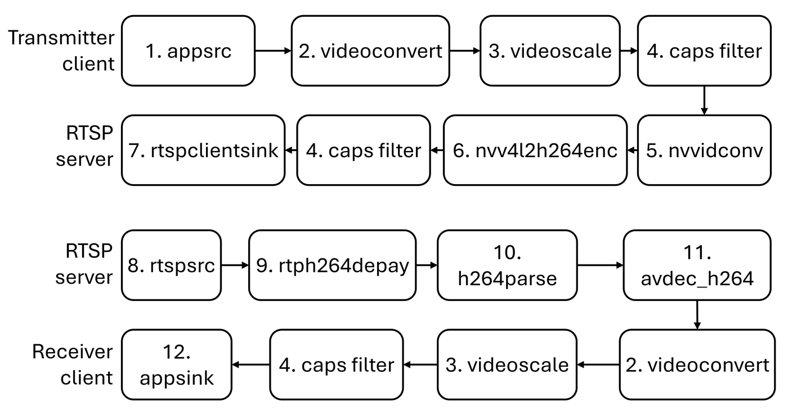

Real-time streaming
Visual feedback uses RTSP. A transmitter client on the Jetson sends encoded packets to MediaMTX; the Windows receiver pulls the same stream. GStreamer builds both pipelines.
{kind=link}

GStreamer pipeline from the transmitter client to the RTSP server (top) and from the RTSP server to the receiver client (bottom).
Element key
# |
Element |
Role |
|---|---|---|
1 |
|
Injects application frames |
2 |
|
Pixel-format conversion |
3 |
|
Resize |
4 |
|
Enforces resolution / format |
5 |
|
NVIDIA hardware converter |
6 |
|
NVIDIA H.264 encoder |
7 |
|
Publishes to MediaMTX over TCP |
8 |
|
Receives the RTSP stream |
9 |
|
Extracts H.264 from RTP |
10 |
|
Parses the H.264 bitstream |
11 |
|
Software H.264 decoder |
12 |
|
Hands frames to the application |
Transmitter (Jetson)
Implemented in stream_loop_zed inside spot_client.py. After
capture and FoV adjustment the pipeline is:
appsrc !
videoconvert ! videoscale !
video/x-raw,format=GRAY8,width=1280,height=240,framerate=60/1 !
nvvidconv !
nvv4l2h264enc bitrate=3000000 !
video/x-h264,stream-format=byte-stream !
rtspclientsink protocols=tcp
location=rtsp://<cloud-ip>:8554/spot-stream
Notes:
Hardware encode on the Jetson (
nvv4l2h264enc) keeps CPU and power low compared with a software encoder.The published size
1280×240is the stacked / cropped stereo pair after the FoV match against the tablet controller.Bitrate is 3 Mbit/s, chosen to survive a 4G uplink.
Transport is TCP so cellular packet loss does not tear the GOP.
Receiver (Windows)
The OpenCV / GStreamer receiver pipeline (bottom of the figure) is:
rtspsrc location=rtsp://<cloud-ip>:8554/spot-stream !
rtph264depay ! h264parse ! avdec_h264 !
videoconvert ! videoscale ! capsfilter !
appsink
Decoded frames are uploaded as OpenGL textures and drawn by
Shader (include/Shader.hpp, src/Shader.cpp) into the
Oculus swap chain.
Why this stack
High-bandwidth stereo over a cellular hop is only practical with hardware compression. Hosting MediaMTX on a public IP removes the need for a site-to-site VPN or a reachable operator network, which is what lets the same binary run from an office HMD to a robot in a harbour yard.